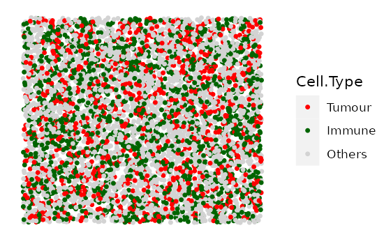
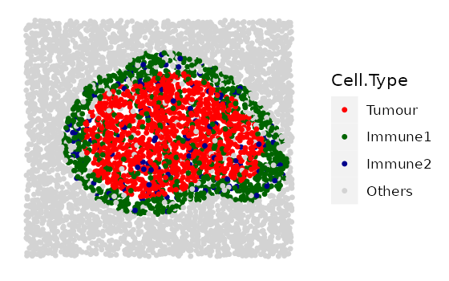
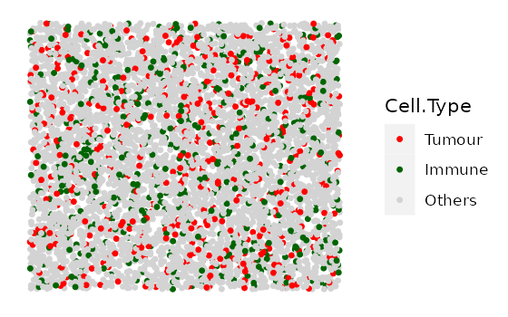
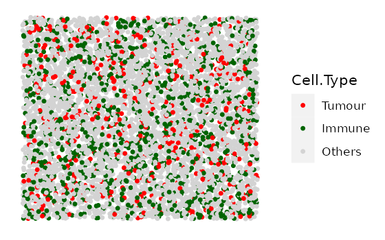
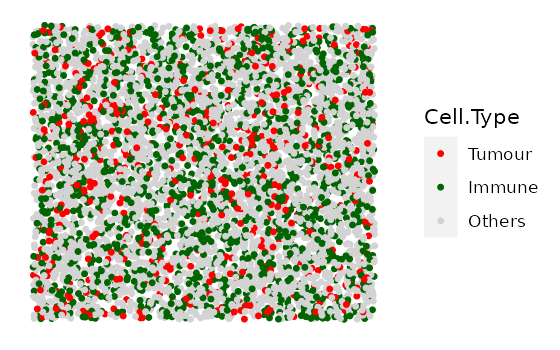
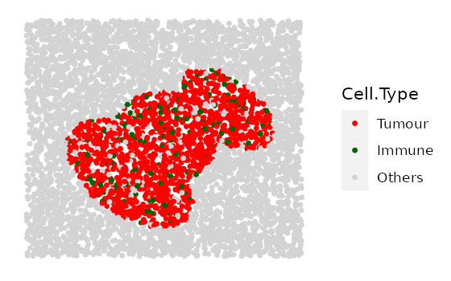
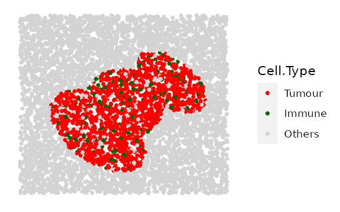
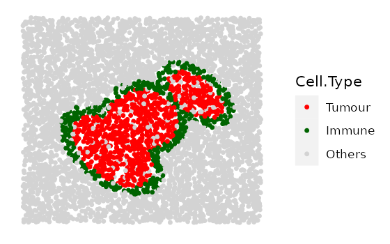

spaSim vignette
Yuzhou Feng, Anna Trigos
26 April 2022
vignette.RmdBasics
spaSim (spatial Simulator) is a simulator of tumor immune microenvironment spatial data. It includes a family of functions to simulate a diverse set of cell localization patterns in tissues. Patterns include background cells (one cell type or multiple cell types of different proportions), tumour/immune clusters, immune rings and double immune rings and stripes (blood/lymphatic vessels).
As quantitative tools for spatial tissue image analysis have been developed and need benchmarking, simulations from spaSim can be applied to test and benchmark these tools and metrics. The output of spaSim are images in SingleCellExperiment object format and can be used with SPIAT (SPIAT (Spatial Image Analysis of Tissues) also developed by our team.
Installing spaSim
spaSim is a R package available via the Bioconductor repository for packages. You can install the lasted development version from Github. You can install spaSim using the following commands in your R session:
## Check that you have a valid Bioconductor installation
BiocManager::valid()
if (!requireNamespace("BiocManager", quietly = TRUE)) {
install.packages("BiocManager")
}
BiocManager::install("spaSim")
# install from GitHub
install.packages("devtools")
devtools::install_github("TrigosTeam/spaSim")Citing spaSim
We hope that spaSim will be useful for your research. Please use the following information to cite the package and the overall approach. Thank you!
## Citation info
citation("spaSim")
#>
#> To cite package 'spaSim' in publications use:
#>
#> Feng Y, Trigos A (2022). _spaSim: Spatial point data simulator for
#> tissue images_. R package version 0.99.1,
#> <https://trigosteam.github.io/spaSim/>.
#>
#> A BibTeX entry for LaTeX users is
#>
#> @Manual{,
#> title = {spaSim: Spatial point data simulator for tissue images},
#> author = {Yuzhou Feng and Anna Trigos},
#> year = {2022},
#> note = {R package version 0.99.1},
#> url = {https://trigosteam.github.io/spaSim/},
#> }Quick start to using spaSim
First attach the package
Simulate an individual image
In spaSim, spatial patterns are simulated on separate layers sequentially starting from ‘background cells’ which serve as the canvas for higher order structures (e.g. tumour clusters, immune clusters and immune rings can be simulated after/on top of background cells). Here we will go through each of these steps.
Simulate background cells
First we randomly generate the spatial locations of generic ‘background cells’ (without cell identities). The ‘background cells’ will serve as the input to the other simulation functions shown below which can assign new identities to these cells in a structured or unstructured way.
Background images are simulated with a Hardcore Process, which is a Poisson process where events (i.e. cells) are maintained at a specific minimum distance from each other. As rHardcore from spatstat.random package deletes cells based on this requirement, our function uses a oversampling_rate to create more cells than the target number of cells (n_cells) to ensure the resulting image has the number of cells specified. If the resulting image ends up with slightly fewer cells than specified, increase the oversampling_rate argument to account for this.
set.seed(610)
bg <- simulate_background_cells(n_cells = 5000,
width = 2000,
height = 2000,
min_d = 10,
oversampling_rate = 1.6,
Phenotype="Others")
head(bg)
#> Cell.X.Position Cell.Y.Position Phenotype
#> Cell_55 156.3994 349.0815 Others
#> Cell_2226 878.6766 633.4749 Others
#> Cell_1113 569.0253 489.3713 Others
#> Cell_4788 1996.0439 292.1873 Others
#> Cell_4600 1756.8683 1608.0244 Others
#> Cell_951 306.1119 1641.1277 Others
# use dim(bg)[1] to check if the same number of cells are simulated.
# if not, increase `oversampling_rate`
dim(bg)[1]
#> [1] 5000Simulate mixed background
To randomly assign ‘background cells’ to the the specified cell identities in the specified proportions in an unstructured manner, spaSim includes the simulate_mixing function.
Users can use the background image they defined earlier (e.g. bg), or the image predefined in the package (bg1) as the ‘background cells’ to further construct the mixed cell identities. In this example, we use bg that was defined in the previous section.
The props argument defines the proportions of each cell type in idents. Although the proportions are specified, the exact cells that are assigned by each identity are stochastic. Therefore, users are encouraged to use the set.seed() function to ensure reproducibility.
mix_bg <- simulate_mixing(bg_sample = bg,
idents = c("Tumour", "Immune", "Others"),
props = c(0.2, 0.3, 0.5),
plot_image = TRUE,
plot_colours = c("red","darkgreen","lightgray"))
Simulate clusters
This function aims to simulate cells that aggregate as clusters like tumour clusters or immune clusters. Tumour clusters can be circles or ovals (or merging several ovals/circles together), and immune clusters are irregular (or merging several irregular shapes together).
First, we specify the properties of clusters such their primary cell type, size, shape and location. If infiltrating cell types are required, we can also include their properties.
If there are multiple cell types lying in the cluster (e.g. tumour cells and infiltrating cells), the assignment of identities to these cells is random, using the random number sampling technique.
cluster_properties <- list(
C1 =list(name_of_cluster_cell = "Tumour", size = 500, shape = "Oval",
centre_loc = data.frame(x = 600, y = 600),infiltration_types = c("Immune1", "Others"),
infiltration_proportions = c(0.1, 0.05)),
C2 = list(name_of_cluster_cell = "Immune1", size = 600, shape = "Irregular",
centre_loc = data.frame(x = 1500, y = 500), infiltration_types = c("Immune", "Others"),
infiltration_proportions = c(0.1, 0.05)))
# can use any defined image as background image, here we use mix_bg defined in the previous section
clusters <- simulate_clusters(bg_sample = mix_bg,
n_clusters = 2,
bg_type = "Others",
win = NULL,
cluster_properties = cluster_properties,
plot_image = TRUE,
plot_categories = c("Tumour" , "Immune", "Immune1", "Others"),
plot_colours = c("red", "darkgreen", "darkblue", "lightgray"))
The simulated image shows a tumour cluster and an immune cluster on a mixed background image. The primary cell type of the tumour cluster is “Tumour”, with some “Immune1” and “Others” cells also within the tumour cluster. The primary cell type of the immune cluster is “Immune1”, with some “Immune2” and “Others” cells also within the immune cluster.
Simulate immune rings
This function aims to simulate tumour clusters and an immune ring surrounding each of the clusters, which represent immune cells excluded to the tumor margin.
First, we specify the properties of immune rings such their primary (inner cluster) and secondary (outer ring) cell types, size, shape, width and location. Properties of cells infiltrating into the inner mass or outer ring can also be set.
If there are multiple cell types lying in the cluster and the immune ring, the assignment of identities to these cells is random, using the random number sampling technique.
immune_ring_properties <- list(
I1 = list(name_of_cluster_cell = "Tumour", size = 500,
shape = "Circle", centre_loc = data.frame(x = 930, y = 1000),
infiltration_types = c("Immune1", "Immune2", "Others"),
infiltration_proportions = c(0.15, 0.05, 0.05),
name_of_ring_cell = "Immune1", immune_ring_width = 150,
immune_ring_infiltration_types = c("Immune2", "Others"),
immune_ring_infiltration_proportions = c(0.1, 0.15)))
rings <- simulate_immune_rings(
bg_sample = bg,
bg_type = "Others",
n_ir = 1,
win = NULL,
ir_properties = immune_ring_properties,
plot_image = TRUE,
plot_categories = c("Tumour", "Immune1", "Immune2", "Others"),
plot_colours = c("red", "darkgreen", "darkblue", "lightgray"))spaSim also allows simulation of two shapes overlapping each other. An algorithm is then used to make the inner mass and outer rings of the different shapes cohesive. An example is shown below. Overlapping of shapes is also possible for clusters and double rings.
immune_ring_properties <- list(
I1 = list(name_of_cluster_cell = "Tumour", size = 500,
shape = "Circle", centre_loc = data.frame(x = 930, y = 1000),
infiltration_types = c("Immune1", "Immune2", "Others"),
infiltration_proportions = c(0.15, 0.05, 0.05),
name_of_ring_cell = "Immune1", immune_ring_width = 150,
immune_ring_infiltration_types = c("Immune2", "Others"),
immune_ring_infiltration_proportions = c(0.1, 0.15)),
I2 = list(name_of_cluster_cell = "Tumour", size = 400, shape = "Oval",
centre_loc = data.frame(x = 1330, y = 1100),
infiltration_types = c("Immune1", "Immune2", "Others"),
infiltration_proportions = c(0.15, 0.05, 0.05),
name_of_ring_cell = "Immune1", immune_ring_width = 150,
immune_ring_infiltration_types = c("Immune2","Others"),
immune_ring_infiltration_proportions = c(0.1, 0.15)))
rings <- simulate_immune_rings(bg_sample = bg,
bg_type = "Others",
n_ir = 2,
win = NULL,
ir_properties = immune_ring_properties,
plot_image = TRUE,
plot_categories = c("Tumour", "Immune1", "Immune2", "Others"),
plot_colours = c("red", "darkgreen", "darkblue", "lightgray"))Simulate double rings
This function aims to simulate tumour clusters with an inner ring (internal tumour margin) and an outer ring (external tumour margin).
First, we specify the properties of double rings such their primary (inner mass), secondary (inner ring), and tertiary (outer ring) cell types, size, shape, width and location. Properties of cells infiltrating into the inner mass or either ring can also be set. If there are multiple cell types lying in the tumour cluster and the double rings, the assignment of identities to the cells is random, using the random number sampling technique.
Similar to the above case, we are placing two double immune rings that overlap with each other to form a more complex shape.
double_ring_properties <- list(
I1 = list(name_of_cluster_cell = "Tumour", size = 300, shape = "Circle",
centre_loc = data.frame(x = 1000, y = 1000),
infiltration_types = c("Immune1", "Immune2", "Others"),
infiltration_proportions = c(0.15, 0.05, 0.05),
name_of_ring_cell = "Immune1", immune_ring_width = 80,
immune_ring_infiltration_types = c("Tumour", "Others"),
immune_ring_infiltration_proportions = c(0.1, 0.15),
name_of_double_ring_cell = "Immune2", double_ring_width = 100,
double_ring_infiltration_types = c("Others"),
double_ring_infiltration_proportions = c( 0.15)),
I2 = list(name_of_cluster_cell = "Tumour", size = 300, shape = "Oval",
centre_loc = data.frame(x = 1200, y = 1200),
infiltration_types = c("Immune1", "Immune2", "Others"),
infiltration_proportions = c(0.15, 0.05, 0.05),
name_of_ring_cell = "Immune1", immune_ring_width = 80,
immune_ring_infiltration_types = c("Tumour","Others"),
immune_ring_infiltration_proportions = c(0.1,0.15),
name_of_double_ring_cell = "Immune2", double_ring_width = 100,
double_ring_infiltration_types = c("Others"),
double_ring_infiltration_proportions = c(0.15)))
double_rings <- simulate_double_rings(bg_sample = bg1,
bg_type = "Others",
n_dr = 2,
win = NULL,
dr_properties = double_ring_properties,
plot_image = TRUE,
plot_categories = c("Tumour", "Immune1", "Immune2", "Others"),
plot_colours = c("red", "darkgreen", "darkblue", "lightgray"))
The simulated image shows two layers of immune rings. The primary cell type in the inner ring (internal tumour margin) is coloured green, with some “Tumour” cells also lie in the inner ring. The outer ring (external tumour margin) is coloured blue, with some other “Others” cells also lie in the outer ring.
Simulate vessels
This function aims to simulate stripes of cells representing blood/lymphatic vessels. First, we specify the properties of vessel structures such as the number present, their width, and the properties of their infiltrating cells. We then randomly assign ‘background cells’ which lie within these vessel structures to the specified cell identities in the specified proportions.
The locations of the vessels are stochastic.
properties_of_stripes = list(
S1 = list(number_of_stripes = 1, name_of_stripe_cell = "Immune1",
width_of_stripe = 40, infiltration_types = c("Others"),
infiltration_proportions = c(0.08)),
S2 = list(number_of_stripes = 5, name_of_stripe_cell = "Immune2",
width_of_stripe = 40, infiltration_types = c("Others"),
infiltration_proportions = c(0.08)))
vessles <- simulate_stripes(bg_sample = bg1,
n_stripe_type = 2,
win = NULL,
stripe_properties = properties_of_stripes,
plot_image = TRUE)Displaying the sequential construction of a simulated image
The TIS (Tissue Image Simulator) function simulates multiple patterns layer by layer and displays the pattern construction sequentially. The patterns are simulated in the order of: background cells, mixed background cells, clusters (tumour/immune), immune rings, double immune rings, and vessels.
Not all patterns are required for using this function. If a pattern is not needed, simply use NULL for the pattern arguments. The example simulates a background sample with a tumour cluster and an immune ring on it (3 patterns: background image -> tumour cluster -> immune ring surrounding tumour cluster).
# First specify the cluster and immune ring properties
## tumour cluster properties
properties_of_clusters = list(
C1 = list( name_of_cluster_cell = "Tumour", size = 300, shape = "Oval",
centre_loc = data.frame("x" = 500, "y" = 500),
infiltration_types = c("Immune1", "Others"),
infiltration_proportions = c(0.3, 0.05)))
## immune ring properties
immune_ring_properties <- list(
I1 = list(name_of_cluster_cell = "Tumour", size = 300,
shape = "Circle", centre_loc = data.frame(x = 1030, y = 1100),
infiltration_types = c("Immune1", "Immune2", "Others"),
infiltration_proportions = c(0.15, 0.05, 0.05),
name_of_ring_cell = "Immune1", immune_ring_width = 150,
immune_ring_infiltration_types = c("Others"),
immune_ring_infiltration_proportions = c(0.15)),
I2 = list(name_of_cluster_cell = "Tumour", size = 200, shape = "Oval",
centre_loc = data.frame(x = 1430, y = 1400),
infiltration_types = c("Immune1", "Immune2", "Others"),
infiltration_proportions = c(0.15, 0.05, 0.05),
name_of_ring_cell = "Immune1", immune_ring_width = 150,
immune_ring_infiltration_types = c("Others"),
immune_ring_infiltration_proportions = c(0.15)))
# simulation
# no background sample is input, TIS simulates the background cells from scratch
# `n_cells`, `width`, `height`, `min_d` and `oversampling_rate` are parameters for simulating background cells
# `n_clusters`, `properties_of_clusters` are parameters for simulating clusters on top of the background cells
# `plot_image`, `plot_categories`, `plot_colours` are params for plotting
simulated_image <-
TIS(bg_sample = NULL,
n_cells = 5000,
width = 2000,
height = 2000,
min_d = 10,
oversampling_rate = 1.6,
n_clusters = 1,
properties_of_clusters = properties_of_clusters,
n_immune_rings = 2,
properties_of_immune_rings = immune_ring_properties,
plot_image = TRUE,
plot_categories = c("Tumour", "Immune1", "Immune2", "Others"),
plot_colours = c("red", "darkgreen", "darkblue", "lightgray"))#> [1] "Immune2 cells were not found and not plotted"

The results display the construction of a complex image with multiple patterns. It started from a background image with cells of no identities, then tumour a cluster is layered on the background image, and finally, an immune ring that surrounds a tumour cluster is layered on the very top.
Simulating a range of multiple images
In some cases simulations of a set of images that span a range of different properties of patterns are needed. Rather than simulating images individually, simulating these images in one go is desirable. The following functions create a quick interface to generate a range of images with different parameters/randomised elements.
Simulate multiple background images (multiple cell types) with different proportions of cell types.
This function aims to simulate a set of images that contain different proportions of specified cell types.
In this example we simulate 4 images with 10% Tumour cells and an increasing number of Immune cells. We first specify the cell types and the proportions of each cell type in each image.
#cell types present in each image
idents <- c("Tumour", "Immune", "Others")
# Each vector corresponds to each cell type in `idents`.
# Each element in each vector is the proportion of the cell type in each image.
# (4 images, so 4 elements in each vector)
Tumour_prop <- rep(0.1, 4)
Immune_prop <- seq(0, 0.3, 0.1)
Others_prop <- seq(0.9, 0.6, -0.1)
# put the proportion vectors in a list
prop_list <- list(Tumour_prop, Immune_prop, Others_prop)
# simulate
bg_list <-
multiple_background_images(bg_sample = bg, idents = idents, props = prop_list,
plot_image = TRUE, plot_colours = c("red", "darkgreen", "lightgray"))
#> [1] 1
#> [1] "Immune cells were not found and not plotted"#> [1] 2#> [1] 3
#> [1] 4
Simulate multiple images with clusters of different properties.
This function aims to simulate a set of images that contain different tumour/immune clusters.
Note that in this function users cannot manually define the base shape and the primary cell type of the clusters. There are three options (1, 2, and 3) for the base shape available in the cluster_shape argument. 1 for a simple cluster where all cells are “Tumour”, 2 for a tumour cluster where the primary cell type is “Tumour” and there is infiltration of types “Immune” and “Others”, and 3 for an immune cluster where the primary cell type is “Immune” and the infiltration cell types are “Immune1” and “Others”.
Here we simulate 4 images with increasing tumour cluster sizes using the cluster shape 1.
# if a property is fixed, use a number for that parameter.
# if a property spans a range, use a numeric vector for that parameter, e.g.
range_of_size <- seq(200, 500, 100)
cluster_list <-
multiple_images_with_clusters(bg_sample = bg1,
cluster_shape = 1,
prop_infiltration = 0.1,
cluster_size = range_of_size,
cluster_loc_x = 0,
cluster_loc_y = 0,
plot_image = TRUE,
plot_categories = c("Tumour", "Immune", "Others"),
plot_colours = c("red", "darkgreen", "lightgray"))
We will also include one example for shape 2 and one example for shape 3.
# shape "2" - Tumour cluster with more and more immune infiltration
range_of_infiltration <- c(0.1, 0.3, 0.5)
cluster_list <-
multiple_images_with_clusters(bg_sample = bg1,
cluster_shape = 2,
prop_infiltration = range_of_infiltration,
cluster_size = 200,
cluster_loc_x = 0,
cluster_loc_y = 0,
plot_image = TRUE,
plot_categories = c("Tumour" , "Immune", "Others"),
plot_colours = c("red","darkgreen", "lightgray")) 

# shape "3" - Immune cluster
cluster_list <-
multiple_images_with_clusters(bg_sample = bg1,
cluster_shape = 3,
prop_infiltration = 0.1,
cluster_size = 500,
cluster_loc_x = 0,
cluster_loc_y = 0,
plot_image = TRUE,
plot_categories = c("Immune", "Others"),
plot_colours = c("darkgreen", "lightgray"))Simulate multiple images with immune rings of different properties
This function aims to simulate a set of images that contain different tumour clusters with immune rings.
Note that similar to multiple_images_with_clusters, in this function users cannot manually define the base shape and the primary cell type of the clusters or the immune rings. There are three options for the base shape (1, 2 and 3) available in the ring_shape argument:
For 1 and 2: - primary cluster cell type is “Tumour” - cluster infiltration cell types are “Immune” and “Others” - primary ring cell type is “Immune” - ring infiltration type is “Others”
For 3: - primary cluster cell type is “Tumour” - cluster infiltration cell types are “Immune” and “Others” - primary ring cell type is “Immune” - ring infiltration type is “Tumour” and “Others”
The cluster size, infiltration proportions, cluster location, ring width, and ring infiltration proportions can be defined.
Here we show 3 images with increasingly wider immune rings. First define any parameter that has a range.
# if a property is to be fixed, use a number for that parameter.
# if a property is to span a range, use a numeric vector for that parameter, e.g.
range_ring_width <- seq(50, 120, 30)
# This example uses ring shape 1
par(mfrow=c(2,1))
immune_ring_list <-
multiple_images_with_immune_rings(bg_sample = bg,
cluster_size = 200,
ring_shape = 1,
prop_infiltration = 0,
ring_width = range_ring_width,
cluster_loc_x = 0,
cluster_loc_y = 0,
prop_ring_infiltration = 0.1,
plot_image = TRUE,
plot_categories = c("Tumour", "Immune", "Others"),
plot_colours = c("red", "darkgreen", "lightgray"))


We will also include one example for ring shape 2 and one example for ring shape 3.
# shape "2" - Immune ring at different locations
cluster_loc_x <- c(-300, 0, 300)
cluster_loc_y <- c(-300, 0, 300)
immune_ring_list <-
multiple_images_with_immune_rings(bg_sample = bg,
cluster_size = 200,
ring_shape = 2,
prop_infiltration = 0,
ring_width = 70,
cluster_loc_x = cluster_loc_x,
cluster_loc_y = cluster_loc_y,
prop_ring_infiltration = 0.1,
plot_image = TRUE,
plot_categories = c("Tumour", "Immune", "Others"),
plot_colours = c("red", "darkgreen", "lightgray"))
# shape "3" - Immune ring has different "Tumour" proportions
prop_ring_infiltration <- c(0.1, 0.2, 0.3)
immune_ring_list <-
multiple_images_with_immune_rings(bg_sample = bg,
cluster_size = 200,
ring_shape = 2,
prop_infiltration = 0,
ring_width = 70,
cluster_loc_x = 0,
cluster_loc_y = 0,
prop_ring_infiltration = prop_ring_infiltration,
plot_image = TRUE,
plot_categories = c("Tumour", "Immune", "Others"),
plot_colours = c("red", "darkgreen", "lightgray"))Input simulated images into SPIAT package.
As SPIAT uses SingleCellExperiment object as the basic data structure for image processing and analysis, the simulated images from spaSim can be directly used as input in SPIAT functions. Examples in SPIAT packages use the images simulated by spaSim.
Here is an example of using SPIAT function on spaSim image. We use simulated_image generated from one of the previous sections.
# The following code will not run as SPIAT is still not released yet. You can try out the dev version on Github~
# if (requireNamespace("SPIAT", quietly = TRUE)) {
# # visualise
# SPIAT::plot_cell_categories(sce_object = simulated_image,
# categories_of_interest = c("Tumour", "Immune1", "Immune2", "Others"),
# colour_vector = c("red", "darkgreen", "darkblue", "lightgray"),
# feature_colname = "Phenotype")
# # calculate average minimum distance of the cells
# SPIAT::average_minimum_distance(sce_object = simulated_image)
# # You can also try other functions :)
# }Reproducibility
The spaSim package (Feng and Trigos, 2022) was made possible thanks to:
- R (R Core Team, 2022)
- BiocStyle (Oleś, 2021)
- knitr (Xie, 2022)
- RefManageR (McLean, 2017)
- rmarkdown (Allaire, Xie, McPherson, Luraschi, Ushey, Atkins, Wickham, Cheng, Chang, and Iannone, 2022)
- sessioninfo (Wickham, Chang, Flight, Müller, and Hester, 2021)
- testthat (Wickham, 2011)
This package was developed using biocthis.
Code for creating the vignette
## Create the vignette
library("rmarkdown")
system.time(render("vignette.Rmd", "BiocStyle::html_document"))
## Extract the R code
library("knitr")
knit("vignette.Rmd", tangle = TRUE)Date the vignette was generated.
#> [1] "2022-04-26 12:08:30 UTC"Wallclock time spent generating the vignette.
#> Time difference of 1.602 minsR session information.
#> ─ Session info ───────────────────────────────────────────────────────────────────────────────────────────────────────
#> setting value
#> version R version 4.2.0 (2022-04-22)
#> os Ubuntu 20.04.4 LTS
#> system x86_64, linux-gnu
#> ui X11
#> language en
#> collate C.UTF-8
#> ctype C.UTF-8
#> tz UTC
#> date 2022-04-26
#> pandoc 2.7.3 @ /usr/bin/ (via rmarkdown)
#>
#> ─ Packages ───────────────────────────────────────────────────────────────────────────────────────────────────────────
#> package * version date (UTC) lib source
#> Biobase 2.55.2 2022-04-07 [1] Bioconductor
#> BiocGenerics 0.41.2 2021-11-15 [1] Bioconductor
#> BiocManager 1.30.17 2022-04-22 [1] RSPM
#> BiocStyle * 2.23.1 2021-12-17 [1] Bioconductor
#> bitops 1.0-7 2021-04-24 [1] RSPM
#> bookdown 0.26 2022-04-15 [1] RSPM
#> bslib 0.3.1 2021-10-06 [1] RSPM
#> cachem 1.0.6 2021-08-19 [1] RSPM
#> cli 3.3.0 2022-04-25 [1] CRAN (R 4.2.0)
#> colorspace 2.0-3 2022-02-21 [1] RSPM
#> crayon 1.5.1 2022-03-26 [1] RSPM
#> DelayedArray 0.21.2 2021-11-16 [1] Bioconductor
#> deldir 1.0-6 2021-10-23 [1] RSPM
#> desc 1.4.1 2022-03-06 [1] RSPM
#> digest 0.6.29 2021-12-01 [1] RSPM
#> dplyr 1.0.8 2022-02-08 [1] RSPM
#> ellipsis 0.3.2 2021-04-29 [1] RSPM
#> evaluate 0.15 2022-02-18 [1] RSPM
#> fansi 1.0.3 2022-03-24 [1] RSPM
#> farver 2.1.0 2021-02-28 [1] RSPM
#> fastmap 1.1.0 2021-01-25 [1] RSPM
#> fs 1.5.2 2021-12-08 [1] RSPM
#> generics 0.1.2 2022-01-31 [1] RSPM
#> GenomeInfoDb 1.31.10 2022-04-21 [1] Bioconductor
#> GenomeInfoDbData 1.2.8 2022-04-26 [1] Bioconductor
#> GenomicRanges 1.47.6 2022-01-12 [1] Bioconductor
#> ggplot2 3.3.5 2021-06-25 [1] RSPM
#> glue 1.6.2 2022-02-24 [1] RSPM
#> gtable 0.3.0 2019-03-25 [1] RSPM
#> highr 0.9 2021-04-16 [1] RSPM
#> htmltools 0.5.2 2021-08-25 [1] RSPM
#> httr 1.4.2 2020-07-20 [1] RSPM
#> IRanges 2.29.1 2021-11-16 [1] Bioconductor
#> jquerylib 0.1.4 2021-04-26 [1] RSPM
#> jsonlite 1.8.0 2022-02-22 [1] RSPM
#> knitr 1.38 2022-03-25 [1] RSPM
#> labeling 0.4.2 2020-10-20 [1] RSPM
#> lattice 0.20-45 2021-09-22 [2] CRAN (R 4.2.0)
#> lifecycle 1.0.1 2021-09-24 [1] RSPM
#> lubridate 1.8.0 2021-10-07 [1] RSPM
#> magrittr 2.0.3 2022-03-30 [1] RSPM
#> Matrix 1.4-1 2022-03-23 [2] CRAN (R 4.2.0)
#> MatrixGenerics 1.7.0 2021-10-26 [1] Bioconductor
#> matrixStats 0.62.0 2022-04-19 [1] RSPM
#> memoise 2.0.1 2021-11-26 [1] RSPM
#> munsell 0.5.0 2018-06-12 [1] RSPM
#> pillar 1.7.0 2022-02-01 [1] RSPM
#> pkgconfig 2.0.3 2019-09-22 [1] RSPM
#> pkgdown 2.0.3 2022-04-24 [1] RSPM
#> plyr 1.8.7 2022-03-24 [1] RSPM
#> polyclip 1.10-0 2019-03-14 [1] RSPM
#> purrr 0.3.4 2020-04-17 [1] RSPM
#> R6 2.5.1 2021-08-19 [1] RSPM
#> ragg 1.2.2 2022-02-21 [1] RSPM
#> Rcpp 1.0.8.3 2022-03-17 [1] RSPM
#> RCurl 1.98-1.6 2022-02-08 [1] RSPM
#> RefManageR * 1.3.0 2020-11-13 [1] RSPM
#> rlang 1.0.2 2022-03-04 [1] RSPM
#> rmarkdown 2.14 2022-04-25 [1] CRAN (R 4.2.0)
#> rprojroot 2.0.3 2022-04-02 [1] RSPM
#> S4Vectors 0.33.17 2022-04-06 [1] Bioconductor
#> sass 0.4.1 2022-03-23 [1] RSPM
#> scales 1.2.0 2022-04-13 [1] RSPM
#> sessioninfo * 1.2.2 2021-12-06 [1] RSPM
#> SingleCellExperiment 1.17.2 2021-11-18 [1] Bioconductor
#> spaSim * 0.99.1 2022-04-26 [1] local
#> spatstat.data 2.2-0 2022-04-18 [1] RSPM
#> spatstat.geom 2.4-0 2022-03-29 [1] RSPM
#> spatstat.random 2.2-0 2022-03-30 [1] RSPM
#> spatstat.utils 2.3-0 2021-12-12 [1] RSPM
#> stringi 1.7.6 2021-11-29 [1] RSPM
#> stringr 1.4.0 2019-02-10 [1] RSPM
#> SummarizedExperiment 1.25.3 2021-12-08 [1] Bioconductor
#> systemfonts 1.0.4 2022-02-11 [1] RSPM
#> textshaping 0.3.6 2021-10-13 [1] RSPM
#> tibble 3.1.6 2021-11-07 [1] RSPM
#> tidyselect 1.1.2 2022-02-21 [1] RSPM
#> utf8 1.2.2 2021-07-24 [1] RSPM
#> vctrs 0.4.1 2022-04-13 [1] RSPM
#> xfun 0.30 2022-03-02 [1] RSPM
#> xml2 1.3.3 2021-11-30 [1] RSPM
#> XVector 0.35.0 2021-10-26 [1] Bioconductor
#> yaml 2.3.5 2022-02-21 [1] RSPM
#> zlibbioc 1.41.0 2021-10-26 [1] Bioconductor
#>
#> [1] /home/runner/work/_temp/Library
#> [2] /opt/R/4.2.0/lib/R/library
#>
#> ──────────────────────────────────────────────────────────────────────────────────────────────────────────────────────Bibliography
This vignette was generated using BiocStyle (Oleś, 2021) with knitr (Xie, 2022) and rmarkdown (Allaire, Xie, McPherson, et al., 2022) running behind the scenes.Citations made with RefManageR (McLean, 2017).
[1] J. Allaire, Y. Xie, J. McPherson, et al. rmarkdown: Dynamic Documents for R. R package version 2.14. 2022. URL: https://github.com/rstudio/rmarkdown.
[2] Y. Feng and A. Trigos. spaSim: Spatial point data simulator for tissue images. R package version 0.99.1. 2022. URL: https://trigosteam.github.io/spaSim/.
[3] M. W. McLean. “RefManageR: Import and Manage BibTeX and BibLaTeX References in R”. In: The Journal of Open Source Software (2017). DOI: 10.21105/joss.00338.
[4] A. Oleś. BiocStyle: Standard styles for vignettes and other Bioconductor documents. R package version 2.23.1. 2021. URL: https://github.com/Bioconductor/BiocStyle.
[5] R Core Team. R: A Language and Environment for Statistical Computing. R Foundation for Statistical Computing. Vienna, Austria, 2022. URL: https://www.R-project.org/.
[6] H. Wickham. “testthat: Get Started with Testing”. In: The R Journal 3 (2011), pp. 5–10. URL: https://journal.r-project.org/archive/2011-1/RJournal_2011-1_Wickham.pdf.
[7] H. Wickham, W. Chang, R. Flight, et al. sessioninfo: R Session Information. https://github.com/r-lib/sessioninfo#readme, https://r-lib.github.io/sessioninfo/. 2021.
[8] Y. Xie. knitr: A General-Purpose Package for Dynamic Report Generation in R. R package version 1.38. 2022. URL: https://yihui.org/knitr/.